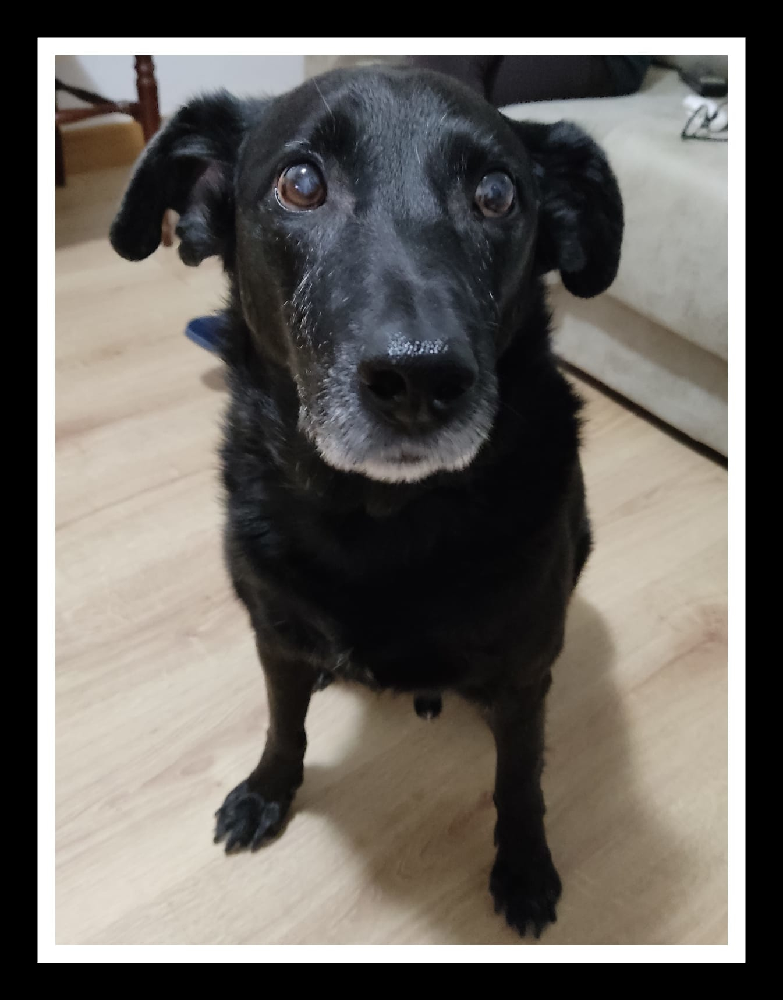

¿Quien soy?
Hola, yo soy Bruno. 👇
Soy un perro mestizo de color negro.
Tengo 11 años y soy muy tranquilo y cariñoso.
Me gusta salir a la calle y dar largos paseos.
¡Ah! Y sobre todo me gustan mucho las galletitas. mmmm...
Cuando paseo me gusta...
- Ir suelto (siempre que las normas lo permitan)
- Oler arboles
- Jugar con otros perros
Me gusta pasear por:
Parques donde puedo ir suelto como:
Parque del Barranco
Es un parque situado entre el tercer y el cuarto cinturon, detras del cementerio de Torrero, y al lado de Parque Venecia.
Otros parques en Zaragoza
| Parque | Suelto Regulado | Suelto 24h |
|---|---|---|
| Parque de La Granja | Si | No |
| Parque Pignatelli | ||
| Parque del Agua | No | Si |
Volver al inicio
Cuando evacuo
Cuando hago mis necesidades, mi dueño tiene que:
- Coger una bolsa
- Recoger la deposicion
- Cerrar la bolsa
- Tirar la bolsa a una papelera o contenedor